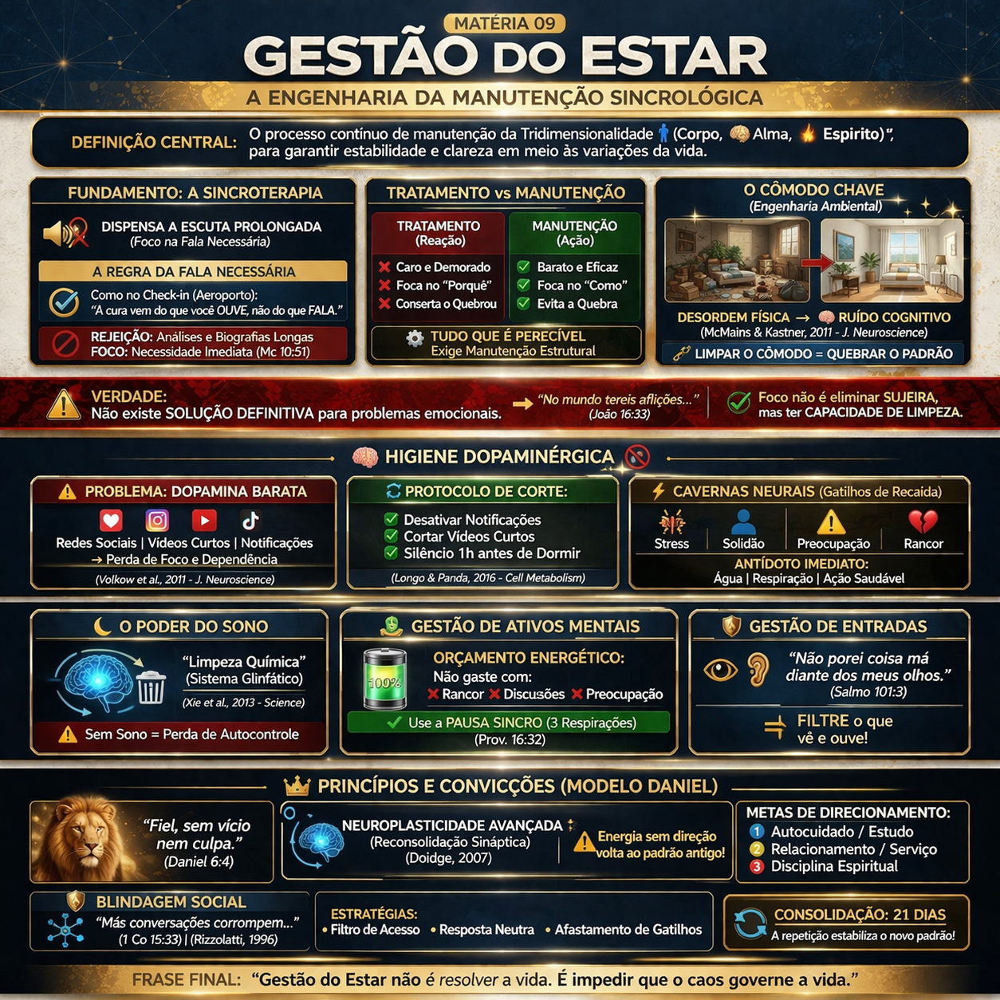

Engenharia vs. Tratamento
Na Sincrologia, o foco não é a investigação biográfica, mas a Manutenção do Estar. A Sincroterapia opera no modelo de "check-in": objetiva, direta e funcional. O indivíduo deve entender que a saúde do sistema tridimensional depende de uma engenharia diária de ajustes, não de soluções definitivas que anulem os problemas do mundo.

Princípio Central: Quem não faz manutenção vive em reparo. A gestão envolve desde a organização do "cômodo chave" até a higiene dopaminérgica e a guarda do coração (centro decisório).